Šta je novo u ZORAN-u
Zet Obično Računa Apsolutno Nepogrešivo — a evo i šta je sve naučio, verziju po verziju.
Kako da dobiješ najnoviju verziju: otvori ZORAN › Podešavanja › Proveri novu verziju › Osveži. Tvoji uneti podaci i podešavanja ostaju sačuvani.
Broj verzije vidiš u Podešavanjima, u delu „O aplikaciji“.
Sadržaj
- Korak 0: kreni od vratila, pošalji predlog1.7.0
- Brže i lepše: iscrtavanje mastilom, listanje strana1.6.0
- Kontrolne mere, sile, varijante, štampa1.5.0
- Crvena upozorenja za prodiranje zuba1.4.0
- Akronim u jednom redu1.3.1
- Zadaješ osno rastojanje, pomeranje se računa1.3.0
- Ispravka naziva širine1.2.1
- Podeli Zorana, ZORAN velikim slovima, animacija1.2.0
- Prva verzija1.0.0
Verzija 1.7.0 — Korak 0: kreni od vratila9. novembar 2026.
Predlog korisnika: „Da početne informacije krenu od prečnika vratila na koje stavljamo zupčanike — da mi on preporuči modul i broj zuba. Pa posle ovo što si napravio.“ Sada tako i radi.
Ne znaš modul? Kreni od vratila
Na vrhu Proračuna je nova sekcija Korak 0 (dodirni je da se otvori). Upišeš:
- prečnik vratila malog zupčanika i prenosni odnos (obavezno; odnos se sam popuni iz trenutnog para);
- prečnik vratila velikog zupčanika — neobavezno, pa se proverava i veliki zupčanik;
- željeno osno rastojanje — neobavezno, pa se nude samo parovi za to rastojanje.
ZORAN za standardne module (DIN 780) nađe najmanji broj zuba sa kojim zupčanik staje na vratilo i predloži do pet opcija. Jedna je označena kao Preporuka (oko 20 zuba na malom zupčaniku — dobar odnos mirnoće rada i čvrstoće). Dugme Primeni prenosi modul, broj zuba i osno rastojanje u proračun, a dalje sve radi kao do sada.
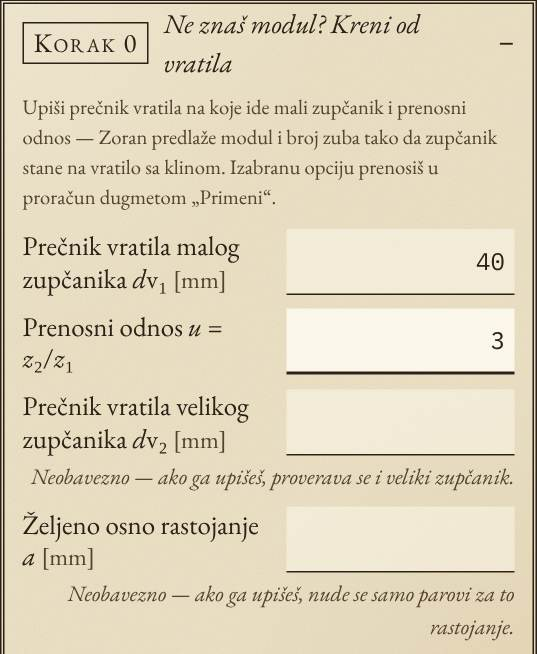
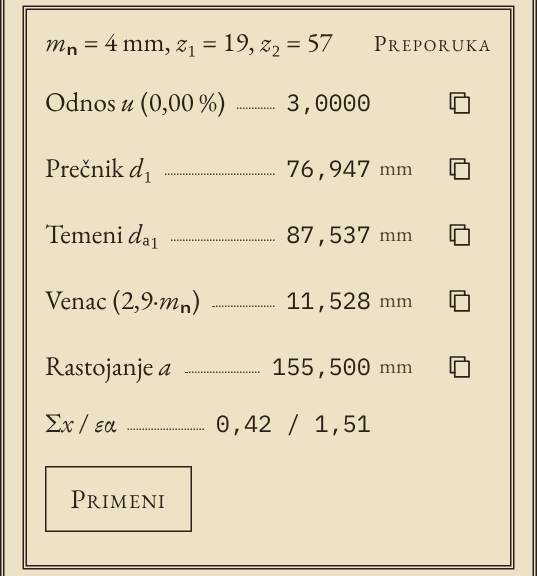
Kako to menja rad: više ne moraš unapred da znaš modul i broj zuba — kreneš od vratila koje već imaš, izabereš jednu od ponuđenih opcija i odmah dobiješ ceo proračun, crtež i kontrolne mere.
Pravila: između dna žleba za klin (dubina u glavčini približno po DIN 6885) i podnožja zuba mora ostati najmanje 2,5·mₙ materijala; pomeranje profila je bez upozorenja (Σx ≈ 0,35 ako rastojanje nije zadato, raspodela po DIN 3992); prednost imaju moduli iz reda 1 po DIN 780. Ugao nagiba i ugao profila uzimaju se iz Proračuna. Čvrstoća zuba se ovde još ne proverava — opcije govore koji modul staje, ne i koji je dovoljno jak; to je plan za sledeći korak (uz moment i materijal). Ako mali zupčanik mora biti manji od ponuđenih, ozubljenje može da se izradi direktno na vratilu (zupčasto vratilo).
Brže crtanje mastilom
Po izboru vlasnika (od četiri ponuđene varijante): zupčanici se i dalje iscrtavaju mastilom, ali duplo brže (0,55 s) i samo jednom — kad se crtež prvi put pojavi posle naslovne strane. Promena prikaza (Ceo par, Pregled, Zona zahvata) je sada trenutna.
Pošalji predlog
U Podešavanjima je novo dugme Pošalji predlog. Na telefonu otvara meni za deljenje (Viber, WhatsApp, mejl…) sa pripremljenim tekstom, a na računaru ga kopira. Uz predlog automatski idu verzija, uređaj i link do trenutnog proračuna — samo dopišeš šta ti nedostaje.
Verzija 1.6.0 — brže i lepše8. novembar 2026.
Isti proračun, iste formule i isti rezultati — ali ZORAN se brže pokreće, brže odgovara dok kucaš i izgleda još više kao stranica starog priručnika.
Brže
- Naslovna strana traje 2,1 s umesto 2,9 s. Animacija je ista (slova se slože, reči se razviju), samo je zbijenija. Dodir je i dalje preskače.
- Dok kucaš, iscrtava se samo ono što vidiš. Ranije se pri svakom pritisku tastera iznova gradila cela Tablica (oko 70 redova) i Savetnik, iako se nisu videli. Sada se oni pripremaju u pozadini, kad aplikacija miruje, pa su gotovi kad ih otvoriš.
- Više pritisaka u istom trenutku = jedan proračun. Brzo kucanje ne pravi zastoje.
- Na pokretanju se učitava 78 KB manje koda. Čitač SolidWorks fajlova i QR biblioteka se učitavaju tek kad zatrebaju — i dalje iz memorije telefona, pa rade i bez interneta.
- Kontrolne mere se računaju jednom po proračunu, a uneti podaci se čuvaju najviše jednom u četvrtini sekunde (i odmah pri zatvaranju aplikacije).
Izmereno na emuliranom telefonu (Pixel 7) sa četiri puta usporenim procesorom, medijana tri merenja:
- rad skripti pri pokretanju: 107 → 56 ms (upola manje);
- odziv na pritisak tastera, sa iscrtavanjem: 34 → 25 ms (najsporiji: 45 → 30 ms);
- animacija zupčanika: i dalje glatkih 60 kadrova u sekundi, bez zastoja;
- prelazak na drugi ekran: isto kao ranije (oko 45 ms), iako sada ima i animaciju listanja.
Lepše
- Zupčanici se iscrtavaju mastilom — kad se crtež prvi put pojavi i kad promeniš prikaz (Ceo par, Pregled, Zona zahvata), pero obiđe profil zuba, pa se pojave kružnice, zahvatna linija i oznake.
- Listanje strana — ekrani se smenjuju blagim pomakom, kao kad okreneš list.
- Zrnast papir — jedva primetna tekstura, kao na pravom papiru starog udžbenika.
- Pečat se utiskuje — dugmad se pri pritisku blago spuste, a red Tablice pod mišem se lako zatamni (na računaru).
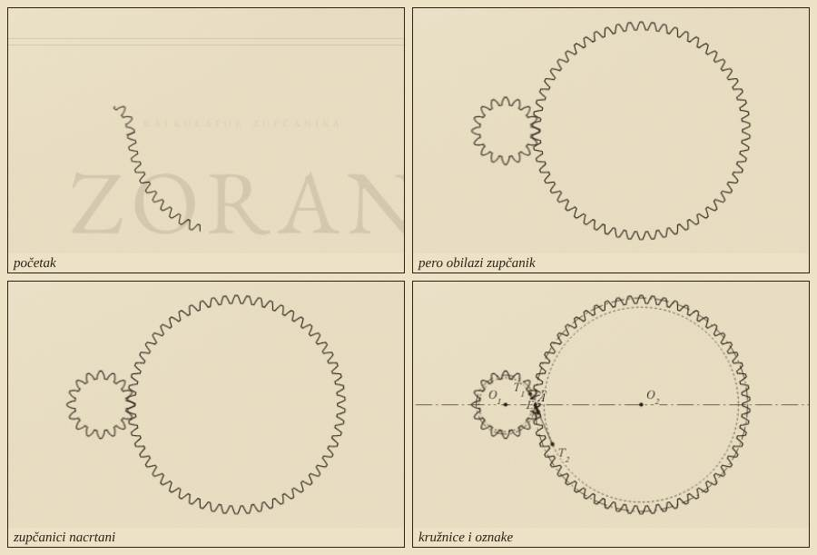
Ako je na telefonu uključeno „Smanji kretanje“ (Reduce motion), efekti se ne prikazuju — crtež se pojavi odmah, a naslovna strana stoji 1,5 s bez animacije.
Verzija 1.5.0 — kontrolne mere, sile, varijante i štampa8. novembar 2026.
Najveće ažuriranje do sada: ZORAN sada daje i mere za radionicu, sile za proračun vratila i ležajeva, poređenje više varijanti i stranicu za štampu ili PDF.
Kontrolne mere za radionicu
U Tablici, kod svakog zupčanika, stoje tri nova reda:
- Mera preko zuba Wk — rastojanje između dva paralelna merna lica preko k zuba (k je izračunat tako da merna lica dodiruju bokove oko sredine visine zuba). To je mera koja se upisuje na radionički crtež i kojom se zupčanik proverava mikrometrom sa tanjirastim pipcima.
- Prečnik kuglice DM — preporuka ≈ 1,68·mₙ, zaokruženo na 0,5 mm.
- Mera preko kuglica Md — mera preko dve kuglice u suprotnim međuzubljima. Pouzdana je i kod uskih kosih zupčanika, gde merenje preko zuba nije moguće.
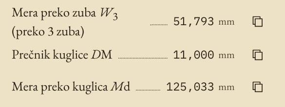
Kako to menja rad: više ne treba tražiti mere u tablicama ili ih računati ručno — vrednosti idu direktno na crtež, a ikonica pored svake vrednosti je kopira.
Formule po DIN 3960: Wk = mₙ·cos αₙ·[(k − 0,5)·π + z·inv αₜ] + 2·x·mₙ·sin αₙ; za kuglice inv αMt = inv αₜ + DM/(z·mₙ·cos αₙ) − π/(2z) + 2x·tan αₙ/z. Provereno: za z = 20, m = 2 mera W₃ = 15,3209 mm (tablična vrednost), a numeričkim proračunom je potvrđeno da kuglica stvarno dodiruje evolventni bok, i za paran i za neparan broj zuba.
Napomene za konstrukciju
Ispod upozorenja (u Proračunu i u Tablici) stoje napomene — saveti koji ne znače da je par pogrešan, ali vredi razmisliti o njima. Pisane su mastilom, ne crvenom bojom, i ne utiču na ocenu u Savetniku.
- Lovački zub: kad z₁ i z₂ imaju zajednički delilac (npr. 16 i 58 imaju 2), isti zubi se uvek sreću i neravnomernije habaju. ZORAN predlaže susedni z₂ bez zajedničkog delioca, uz odstupanje prenosnog odnosa.
- b/d₁ > 1,2: preširok zupčanik u odnosu na prečnik — opterećenje se neravnomerno raspoređuje po širini.
- β > 30°: velike aksijalne sile — treba proveriti ležajeve.
- Mera preko zuba nije izvodljiva kad je zupčanik preuzak za dati ugao nagiba, i kuglica ne dodiruje evolventu kad preporučeni prečnik ne odgovara.
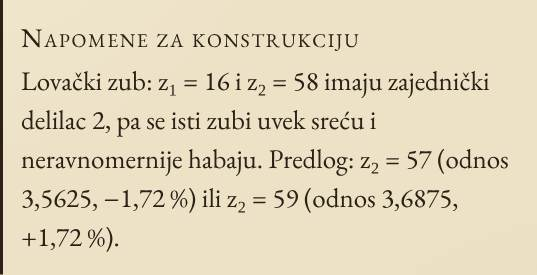
Sile u zahvatu
U Tablici je novo, neobavezno polje Obrtni moment T₁ [N·m]. Kad ga upišeš, dobiješ obimnu, radijalnu, aksijalnu i normalnu silu na boku, kao i moment na velikom zupčaniku. To su ulazni podaci za proračun vratila i ležajeva.
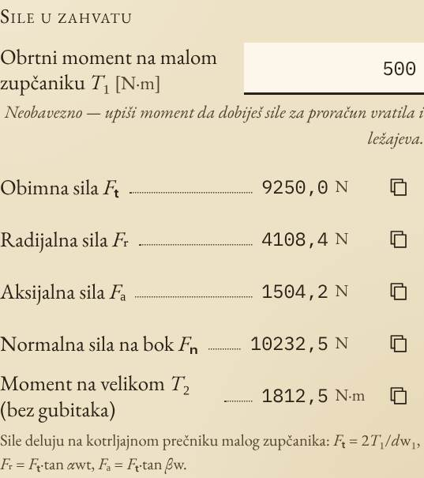
Fₜ = 2·T₁/dw₁, Fᵣ = Fₜ·tan αwt, Fₐ = Fₜ·tan βw. Moment na velikom zupčaniku je dat bez gubitaka (T₂ = T₁·u).
Varijante — poređenje
Na dnu Tablice: Sačuvaj kao varijantu pamti trenutni par. Promeni ulazne podatke, sačuvaj ponovo — i varijante se pojavljuju jedna pored druge (do 6): broj zuba, modul, osno rastojanje, pomeranja, prečnici, stepeni sprezanja i broj upozorenja. Učitaj vraća varijantu u Proračun, Kopiraj poređenje kopira celu tabelu (lepi se u Excel).
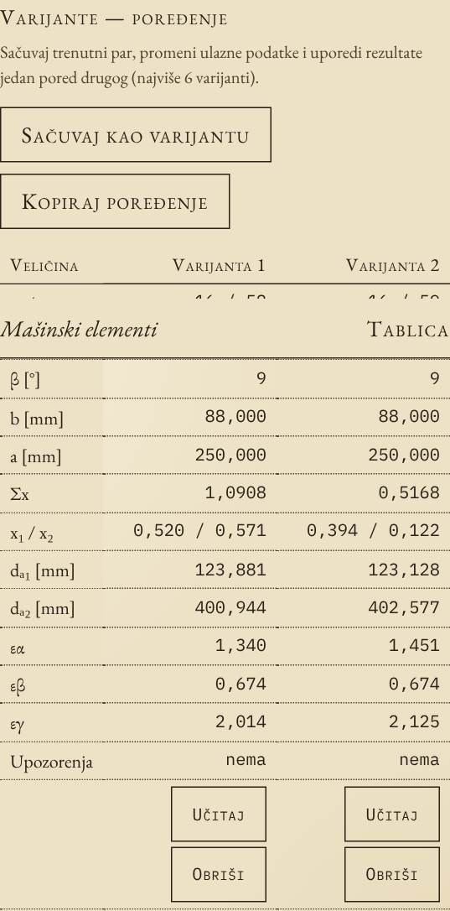
Štampa i PDF
Dugme Štampaj / PDF u Tablici pravi stranicu kao iz priručnika: zaglavlje sa podacima i datumom, crtež zahvata, izračunato pomeranje profila sa proverom, pa cela Tablica. Na telefonu izaberi „Sačuvaj kao PDF“ u meniju za štampu.
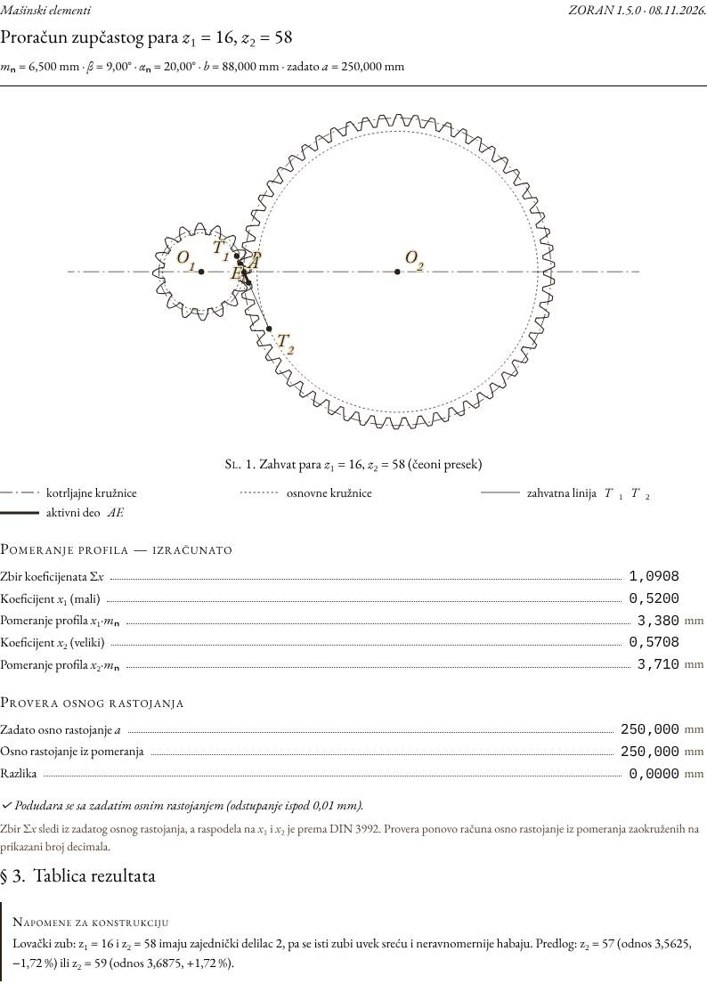
Link do proračuna
Dugme Link do proračuna pravi link sa svim unetim podacima (z₁, z₂, mₙ, β, αₙ, b, a). Kolega ga otvori i odmah vidi isti proračun. Na telefonu se otvara meni za deljenje, na računaru se link kopira.
Obaveštenje o novoj verziji i ova stranica
Posle svakog ažuriranja, ispod zaglavlja se jednom pojavi traka „ZORAN je ažuriran…“ sa linkom ovde. Stranica je dostupna i iz Podešavanja (Šta je novo — sve izmene) i radi bez interneta.
Verzija 1.4.0 — crvena upozorenja za prodiranje zuba8. novembar 2026.
Kad zahvat počne pre tačke T₁ ili se završi posle T₂, vrh jednog zupčanika zalazi u nogu drugog, gde nema evolvente — „zub ulazi u zub“.
- Upozorenje sa iznosom, npr. „vrh velikog zupčanika zalazi u nogu malog — zahvat počinje 3,463 mm pre tačke T₁“.
- Na crtežu: deo zahvatne linije van T₁T₂ je crven, a oko mesta prodiranja je isprekidan crveni krug (za oba smera okretanja).
- U animaciji: par zuba postaje crven tačno dok mu je tačka dodira u zabranjenoj zoni.
- U Tablici: „Početak zahvata od T₁“ i „Kraj zahvata do T₂“ — negativna vrednost (crveno) znači prodiranje.
- Savetnik više ne predlaže kombinacije sa prodiranjem.
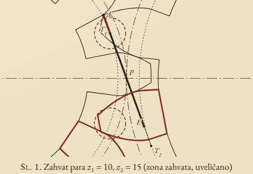
Kako to menja rad: greška koja bi se inače videla tek na probnoj montaži sada se vidi odmah. Kod podrazumevanog para (16/58) prodiranja nema; javlja se kod malog broja zuba i premalog osnog rastojanja.
Verzija 1.3.1 — akronim u jednom redu8. novembar 2026.
„Zet Obično Računa Apsolutno Nepogrešivo“ sada stoji u jednom redu i na naslovnoj animaciji i u Podešavanjima. Veličina slova se sama prilagođava širini ekrana (najmanje 16 px na najužem telefonu), a tokom animacije red se ne pomera.
Verzija 1.3.0 — zadaješ osno rastojanje, pomeranje profila se računa8. novembar 2026.
- Gore se unosi: z₁, z₂, mₙ, β, αₙ, širina ozubljenja b i osno rastojanje a koje zadaješ.
- Pomeranje profila se više ne unosi: iz zadatog a ZORAN računa Σx, a raspodelu na x₁ i x₂ radi po DIN 3992, uz zaštitu od podsecanja.
- Ispod crteža stoje izračunata pomeranja i provera: iz pomeranja zaokruženih kako bi se upisala u crtež ponovo se računa osno rastojanje i poredi sa zadatim.
- Polje je preimenovano u „Širina ozubljenja b“.
- Ranije uneta pomeranja su se pri ažuriranju pretvorila u odgovarajuće a, pa niko nije izgubio svoj par.
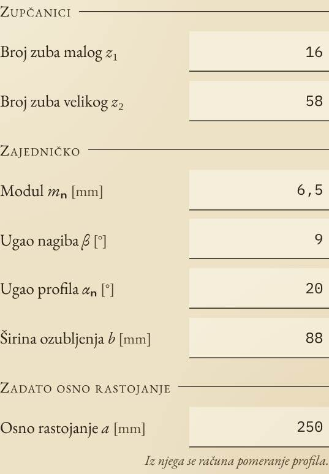
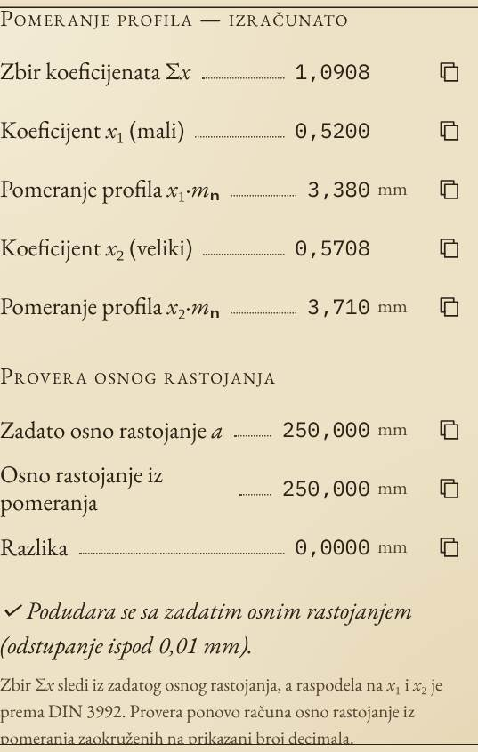
Verzija 1.2.1 — ispravka naziva širine8. novembar 2026.
„Širina b“ je preimenovana (u 1.3.0 konačno u „Širina ozubljenja b“), i u Uvozu i u SolidWorks makrou. Ime svojstva ZORAN_Sirina je ostalo isto, pa ranije označeni delovi i dalje rade.
Verzija 1.2.0 — Podeli Zorana, ZORAN velikim slovima, animacija naslova7. novembar 2026.
- Podeli Zorana (Podešavanja): prozor sa QR kodom za skeniranje kamerom, „Pošalji u aplikaciju“ (Viber, WhatsApp, poruke…) i „Kopiraj link“. QR se pravi bez interneta.
- ZORAN velikim slovima i animacija na naslovnoj strani: slova se slože, ispod svakog se povuče crta, a početno slovo „padne“ u akronim i razvije reč. Dodir je preskače.
- Aplikacija se ponaša kao prava aplikacija: dvostruki dodir i „pinch“ ne zumiraju, a donja traka se sklanja dok kucaš.
- Akronim se pojavljuje i u kolofonu Tablice i kad kopiraš rezultate.
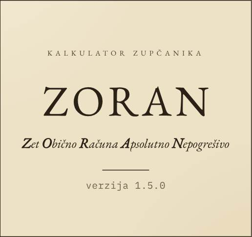
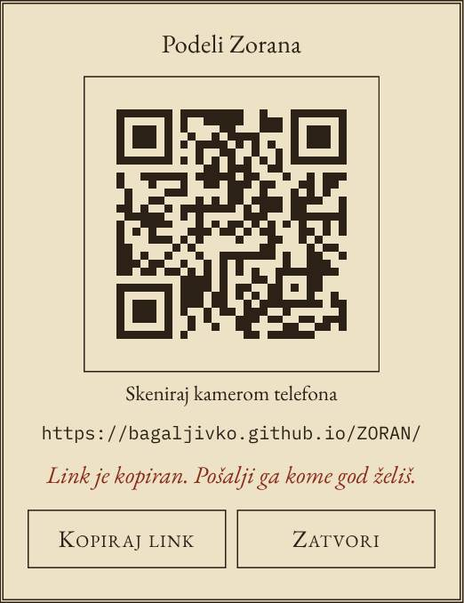
Verzija 1.0.0 — prva verzija7. novembar 2026.
Kalkulator cilindričnih evolventnih zupčanika sa pravim i kosim zubima, u stilu starog udžbenika Mašinskih elemenata:
- Proračun dok kucaš: prečnici, debljine zuba, skraćenje temena, stepeni sprezanja i upozorenja (podsecanje, zašiljen vrh, εα < 1,1).
- Crtež zahvata iz pravih evolventi, sa tri prikaza i animacijom.
- Tablica sa kopiranjem svake vrednosti, Savetnik (DIN 3992 / DIN 780), Uvoz iz SolidWorks-a (.SLDPRT) i Podešavanja (mm/inč, zarez/tačka, decimale, dijagnostika).
- Radi bez interneta i instalira se na telefon.
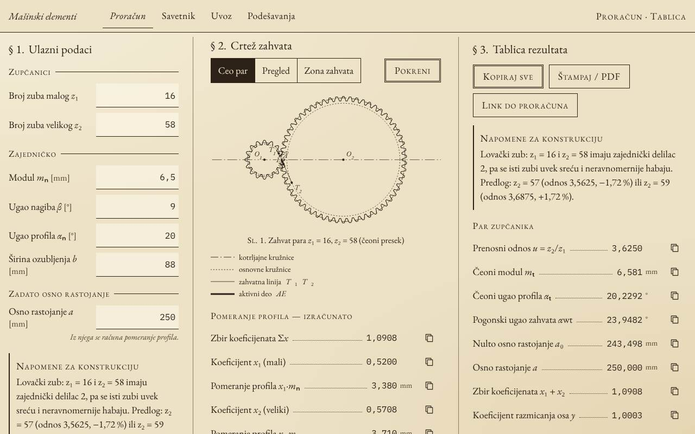
ZORAN — Zet Obično Računa Apsolutno Nepogrešivo.